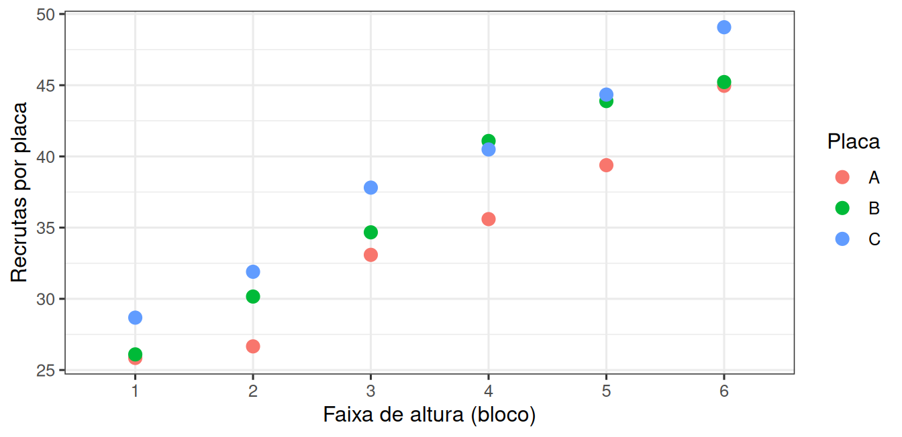
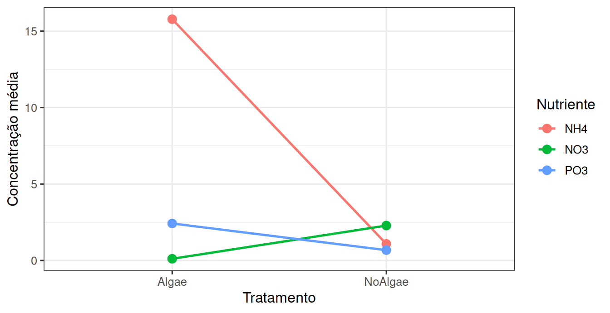
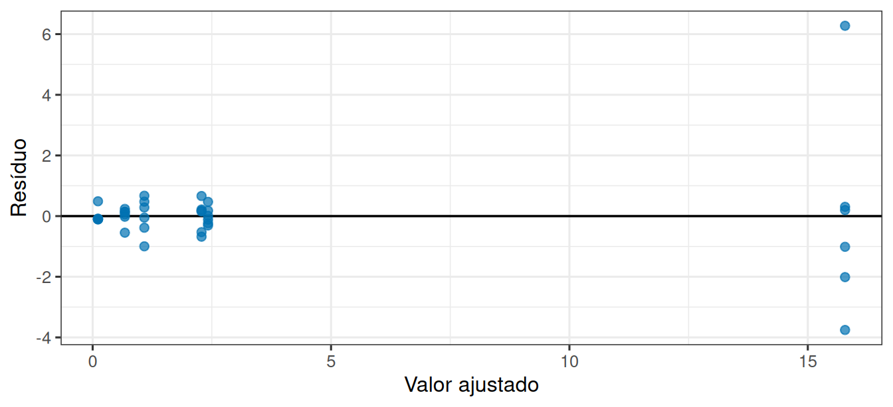

library(tidyverse)
theme_set(theme_bw(base_size = 12))Prática em R 07
Blocos e dois fatores
1 Dois problemas diferentes de delineamento
O primeiro: você quer comparar três tipos de placa de assentamento, mas o costão tem um gradiente forte de altura que afeta muito o recrutamento. Como impedir que o gradiente esconda o efeito das placas?
O segundo: você tem dois fatores que interessam de verdade e quer saber se o efeito de um depende do outro.
2 Um costão com gradiente
Vamos construir o experimento no computador, para saber exatamente qual é a verdade. Seis faixas de altura, três placas em cada faixa:
experimento <- tibble(
bloco = rep(1:6, each = 3),
placa = rep(c("A", "B", "C"), times = 6)
) |>
mutate(
media_esperada = 20 + 4 * bloco +
if_else(placa == "B", 2.5, 0) +
if_else(placa == "C", 5, 0),
recrutas = media_esperada + rnorm(18, mean = 0, sd = 1.2)
)
experimento# A tibble: 18 × 4
bloco placa media_esperada recrutas
<int> <chr> <dbl> <dbl>
1 1 A 24 25.8
2 1 B 26.5 26.1
3 1 C 29 28.7
4 2 A 28 26.7
5 2 B 30.5 30.2
6 2 C 33 31.9
7 3 A 32 33.1
8 3 B 34.5 34.7
9 3 C 37 37.8
10 4 A 36 35.6
11 4 B 38.5 41.1
12 4 C 41 40.5
13 5 A 40 39.4
14 5 B 42.5 43.9
15 5 C 45 44.3
16 6 A 44 45.0
17 6 B 46.5 45.2
18 6 C 49 49.1Leia a linha da media_esperada. Ela diz três coisas, todas visíveis:
- cada faixa acrescenta 4 recrutas em relação à anterior: é o gradiente;
- a placa B tem 2,5 recrutas a mais que a A, e a C tem 5 a mais: é o efeito que queremos detectar;
- o
rnorm()acrescenta a variação que sobra.
Repare na escala: o gradiente vai de 4 a 24 recrutas entre a primeira e a última faixa, enquanto o efeito da placa não passa de 5. É por isso que ele corre o risco de desaparecer.
ggplot(experimento, aes(x = factor(bloco), y = recrutas, colour = placa)) +
geom_point(size = 3) +
labs(x = "Faixa de altura (bloco)", y = "Recrutas por placa", colour = "Placa")
3 A análise que ignora o bloco
sem_bloco <- aov(recrutas ~ placa, data = experimento)
summary(sem_bloco) Df Sum Sq Mean Sq F value Pr(>F)
placa 2 60.2 30.08 0.522 0.604
Residuals 15 865.2 57.68 O valor de p não indica efeito nenhum. E sabemos que o efeito existe: nós o colocamos ali.
O motivo está no Mean Sq dos resíduos: ele é enorme, porque toda a variação entre faixas foi jogada no resíduo. A régua ficou grosseira demais para medir um efeito de 2,5 a 5 recrutas.
4 A análise que reconhece o bloco
Basta somar o bloco à fórmula:
com_bloco <- aov(recrutas ~ placa + factor(bloco), data = experimento)
summary(com_bloco) Df Sum Sq Mean Sq F value Pr(>F)
placa 2 60.2 30.08 21.08 0.000259 ***
factor(bloco) 5 850.9 170.19 119.27 1.4e-08 ***
Residuals 10 14.3 1.43
---
Signif. codes: 0 '***' 0.001 '**' 0.01 '*' 0.05 '.' 0.1 ' ' 1Nesta execução, o valor de p da linha placa passou de 0,604 no primeiro modelo para menor que 0,001 no segundo. O quadrado médio residual caiu de 57,7 para 1,4.
5 Agora, dois fatores de interesse
O segundo problema muda de natureza. Um experimento em mesocosmos cruzou dois fatores: presença de algas (dois níveis) e tipo de nutriente adicionado (três níveis).
url <- "https://raw.githubusercontent.com/FCopf/datasets/refs/heads/main/zuur-2009-data-sets/Biodiversity.txt"
biodiv <- read_tsv(url, show_col_types = FALSE)
nrow(biodiv)[1] 108n_distinct(biodiv$MU)[1] 36São 108 linhas, mas apenas 36 mesocosmos: cada um foi medido três vezes. O mesocosmo é a unidade experimental, então resumimos as três medidas antes de analisar:
mesocosmos <- biodiv |>
group_by(MU, Treatment, Nutrient) |>
summarise(concentracao = mean(Concentration), .groups = "drop")
mesocosmos |> count(Treatment, Nutrient)# A tibble: 6 × 3
Treatment Nutrient n
<chr> <chr> <int>
1 Algae NH4 6
2 Algae NO3 6
3 Algae PO3 6
4 NoAlgae NH4 6
5 NoAlgae NO3 6
6 NoAlgae PO3 6Seis mesocosmos em cada uma das seis combinações, em um fatorial 2 × 3 equilibrado.
6 Como ficam as seis combinações?
resumo <- mesocosmos |>
group_by(Treatment, Nutrient) |>
summarise(
media = mean(concentracao),
desvio = sd(concentracao),
.groups = "drop"
)
resumo# A tibble: 6 × 4
Treatment Nutrient media desvio
<chr> <chr> <dbl> <dbl>
1 Algae NH4 15.8 3.43
2 Algae NO3 0.112 0.239
3 Algae PO3 2.42 0.289
4 NoAlgae NH4 1.08 0.617
5 NoAlgae NO3 2.28 0.506
6 NoAlgae PO3 0.675 0.282ggplot(resumo, aes(x = Treatment, y = media, colour = Nutrient, group = Nutrient)) +
geom_line(linewidth = 0.9) +
geom_point(size = 3) +
labs(x = "Tratamento", y = "Concentração média", colour = "Nutriente")
7 O modelo com dois fatores
Na fórmula, + combina os fatores sem interação e * acrescenta o termo de interação:
aditivo <- aov(concentracao ~ Treatment + Nutrient, data = mesocosmos)
summary(aditivo) Df Sum Sq Mean Sq F value Pr(>F)
Treatment 1 203.7 203.65 12.28 0.001376 **
Nutrient 2 399.5 199.74 12.04 0.000126 ***
Residuals 32 530.7 16.58
---
Signif. codes: 0 '***' 0.001 '**' 0.01 '*' 0.05 '.' 0.1 ' ' 1com_interacao <- aov(concentracao ~ Treatment * Nutrient, data = mesocosmos)
summary(com_interacao) Df Sum Sq Mean Sq F value Pr(>F)
Treatment 1 203.7 203.7 97.03 6.49e-11 ***
Nutrient 2 399.5 199.7 95.17 1.02e-13 ***
Treatment:Nutrient 2 467.7 233.8 111.42 1.30e-14 ***
Residuals 30 63.0 2.1
---
Signif. codes: 0 '***' 0.001 '**' 0.01 '*' 0.05 '.' 0.1 ' ' 18 Os resíduos se comportam bem?
diagnostico <- tibble(
ajustado = fitted(com_interacao),
residuo = residuals(com_interacao)
)
ggplot(diagnostico, aes(x = ajustado, y = residuo)) +
geom_hline(yintercept = 0, linewidth = 0.6) +
geom_point(size = 2, alpha = 0.7, colour = "#0072B2") +
labs(x = "Valor ajustado", y = "Resíduo")
9 Entrega
10 Atividade extraclasse 04: Fator, bloco ou covariável?
Esta seção é feita em casa, na semana indicada no cronograma, e produz uma entrega própria.
Cada situação abaixo descreve um estudo. Para cada uma, decida o papel de cada variável mencionada e justifique.
- Um experimento testa três rações para camarões em 12 tanques, montados em três salas com temperaturas ligeiramente diferentes. O que é a sala?
- Um estudo compara o crescimento de mudas de mangue em dois substratos. A altura inicial de cada muda foi medida antes do plantio. O que é a altura inicial?
- Um experimento cruza duas temperaturas e três salinidades para avaliar a sobrevivência de larvas. O que são temperatura e salinidade?
- Um levantamento compara a riqueza de peixes entre dois estuários. A profundidade de cada ponto de coleta foi registrada. O que é a profundidade?